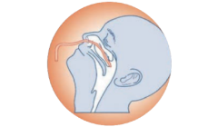

채취방법
- 용기는 냉장보관하였다가 채혈하기 1시간 전 용기를 실온에 두어 냉기를 가시게 합니다.
- 채혈은 검체 수거 당일 오전 10시 이후에 합니다.
- 채혈 후 즉시 용기 안의 시약과 잘 혼합되도록 상하로 shaking합니다.
- 용기 내 TB 항원과 혈액을 잘 혼합해주어야 T-cell로부터 IFN-γ의 분비가 원활히 이뤄집니다.
혼합이 잘 이뤄지지 않으면 반응이 낮아 부정확한 결과가 나올 수 있습니다. - 의뢰서 환자정보와 채혈시간을 기입합니다.
- 채혈된 전용용기는 실온상태로 세워 16시간 안에 검사실에 도착해야합니다.
전용용기 채취 순서

결핵균 특이항원 자극 인터페론-감마(QTB-plus) 검사의 경우
- 4개의 전용용기와 검사의뢰서에 환자명, 채혈시간 기록합니다.
- 채혈순서는 회색(Nil)→초록(TB-1 Ag) →노랑(TB-2 Ag) →보라(Mitogen) 순으로 각 1mL 채혈 즉시 상하로 10회Shaking합니다. (검사코드 : 52389)

결핵균 특이항원 자극 인터페론-감마 검사의 경우
- 3개의 전용용기와 검사의뢰서에 환자명, 채혈시간 기록합니다.
- 채혈순서는 회색(Nil)→빨강(TB Ag)→ 보라(Mitogen) 순으로 각 1mL 채혈 즉시 20회 정도 흔들거나 약 30초간 Shaking합니다. (검사코드 : 52393)
취급 주의사항
다음 사항의 경우 검사가 불가능하오니 주의하여 주시기 바랍니다.
01.
채혈 후 16시간 안에 검사실에 도착하지 못한 검체 (오전 10시 이전에 채혈한 경우, 채혈한 후 당일 접수하지 못한 경우)
02.
검체용기 내 성분과 혼합되도록 용기를 충분히 흔들지 않은 경우
03.
채혈한 검체용기를 냉장/동결 보관한 경우
채취방법
- 용기는 냉장보관(2-8℃)하며 채혈 직전 냉장고에서 꺼냅니다.
- 채혈 전 용기 라벨에 환자 정보, 채혈 시간 및 배양 시작 시간을 기재 후 전혈 1.0mL를 채혈합니다.
여러 개의 튜브에 채혈하는 경우, NK VueⓇ tube에 가장 먼저 채혈합니다. - 채혈 즉시(최대 30분 이내) 용기를 세워 37℃ 배양기(Incubator)에서 20~24시간 배양합니다.
- 배양이 완료된 전용용기에서 상청액을 새 용기(1.5mL tube)에 옮겨 13,000rpm에서 1분간 원심분리 합니다.
- 원심분리 후 분리된 상청액을 새 용기(1.5mL tube)에 옮겨 냉장(2~8℃) 보관하여 의뢰합니다.
취급 주의사항
다음 사항의 경우 검사가 불가능하오니 주의하여 주시기 바랍니다.
01.
검체 전처리를 이행하지 않은
검체의 경우
02.
채혈량이 부적절한 경우 (적정 채혈량 1.0mL, 검은색 Bar-end marker 확인)
03.
채혈 후 배양을 이행하지 않고 실온, 냉장 또는 냉동 보관한 경우
채취방법
- 채혈키트에서 라벨지 3장에 수진자의 정보를 기재하여 Sodium heparin 용기와 1.5mL 마이크로튜브 (PP 재질) 2개에 부착합니다.
- 채혈 시 21G Needle과 Sodium heparin 용기에 채혈하며, 채혈 시 용기의 80% 이상 채혈합니다.
* 주사기 사용 금지
(주사기 사용 시 내벽의 플라스틱이 아밀로이드-베타를 응집시켜 위음성 발생 가능성 있습니다.) - 채혈 후 혈액과 항응고제가 충분히 섞이도록 용기를 부드럽게 8-10회 전도 혼합하거나, roller mixer를 이용합니다.
- 채혈 후 1시간 이내(최대 3시간 이내) 혈장 분리하며, 분리한 혈장은 1.5mL 마이크로튜브(PP 재질)에 옮겨 반드시 동결(-20℃) 상태로 검사실에 도착해야 합니다.
취급 주의사항
다음 사항의 경우 검사가 불가능하오니 주의하여 주시기 바랍니다.
01.
채혈량이 부족하거나 채혈 후 혈장 분리하지 않고 의뢰한 경우
02.
최대 3시간 이내 분리하지 않은 혈장 검체
03.
혈장검체를 실온/냉장 보관한 경우, 용혈검체
04.
혈장검체를 PP재질이 아닌 PE재질의 혈청분리관, PS재질의 대체튜브에 담아 의뢰한 경우 검사진행 불가
채취 시기
- 건강한 신생아 : 생후 48시간 이후 7일 이내, 모유나 우유를 충분히 섭취하고 2시간이 지난 때
- 모유나 우유 섬취량이 적은 미숙아 : 1주일 이후라도 젖을 충분히 섭취하고 있을때
너무 이른 체혈은 환아의 혈중에 증가되어야 할 아미노산 등이 아직 정상범위에 있게 되며 혈중 TSH가 출생 직후에 정상아에서 높은 치를 나타내기 때문에 위양성 결과가 나오게 되므로 바람직하지 못합니다.
선천성 대사이상검사 채취는
어떻게 하나요?
01.
신생아를 따뜻하게
신생아의 발에 혈류 증가를 위해 다리를 심장보다 아래쪽에 위치하도록 하고, 3분 정도 따뜻한 물수건으로 뒤꿈치를 감싸 발을 따뜻하게 합니다.
02.
혈액 채취
소독한 란셋으로 발뒤꿈치의 외측부를 찌른 후 처음 나온 혈액 한 방울을 멸균 거즈로 닦아내고 두 번째 혈액 방울부터 혈액여지의 뒤쪽 면에 접촉하여 앞면까지 혈액이 충분히 스며들었는지 확인합니다.
03.
신생아를 따뜻하게
채혈지 4개의 원에 가득 차게 혈액을 스며들게 한 후 표면에 오염물질이 없는 평평한 곳에서 3-4시간 정도 충분히 건조시킨 후 의뢰합니다.

이상적인 채혈/부적절한 채혈의
예를
확인하세요.
이상적인 채혈의 예
부적절한 채혈의 예
| 검체 예시 | 주의 사항 |
|---|---|
|
혈액여지가 원을 충분히 채우지 않거나 반대쪽 면까지 충분히 채우지 않은 경우
|
|
|
혈액여지 표면의 긁힘 혹은 문질러짐 (여지 표면이 거칠게 일어남)
|
|
|
혈액여지의 건조 부족
|
|
|
혈액여지에 혈액 넘침
|
|
|
희석 변색 및 검체 오염
|
|
|
혈청에 의한 링 형성
|
|

|
혈액 응고
|
취급 주의사항
- Capillary tube를 사용한 경우: 불충분하고 균일하지 못한 혈액 흡수의 원인이 되므로 금합니다.
- 항응고제를 사용한 경우: EDTA 혹은 Citrate 등의 항응고제 사용은 간섭효과를 일으켜 왜곡된 결과를 가져 옵니다.
- 소독과정의 알코올이 완전히 제거되지 않은 경우: 소독 시 알코올 성분을 완전히 닦아 내지 않으면 검체 희석의 원인이 되므로 반드시 알코올 성분을 제거한 후 채혈하시기 바랍니다.
- 충분히 건조하지 않고 포장한 경우: 혈액여지를 충분히 건조시키지 않고 비닐 팩이나 봉투에 밀봉하면 혈청 분리 혹은 균류나 곰팡이 증식의 원인이 되므로 반드시 건조시키기 바랍니다.
- 건조 전 혈액여지가 수평상태를 유지하지 못한 경우: 혈액여지는 수직으로 세워서 건조‧보관하면 혈액성분이 흘러내려 혈청분리가 일어날 수 있습니다.
다음 사항의 경우 불필요한 재 채혈의 원인이 되니 주의하여 주시기 바랍니다.
세포유전검사
의뢰시 준수 사항
- 세포유전학검사의뢰서와 함께 반드시 유전자검사 동의서를 작성해주시기 바랍니다.
- 무균적으로 검체를 채취하여 실온상태로 보관 및 운송합니다.
- 검체 채취부터 배양까지 24시간 이내에 시행되도록 합니다.
24시간 이상 지연 시냉장 보관(냉동 절대 불가)할 수 있으나 검사 소요시간의 지연 또는 검사에 실패할 수 있습니다. - 태아를 대상으로 하는 염색체 검사는 검체 채취 전에 검사의 정확성 및 검사한계에 대해 환자나 보호자에게 충분히 설명을 하여 동의를 얻은 후에 검사를 시행하는 것이 바람직합니다
검체별 채취 방법
01.
말초혈액(Peripheral blood, PB)
- 검체용기Sodium Heparin tube
- 검체량7.0-10.0mL(소아: 2.0mL)
- 주의사항무균적으로 채취한 후 혈액응고를 방지하여 24시간 이내에 실온보관으로 검사실에 도착하도록 합니다.
02.
골수(Bone marrow, BM)
- 검체용기Sodium Heparin tube
- 검체량5.0-10.0mL
- 주의사항환자의 임상소견 및 추정진단에 따라 검사방법 자체가 달라지므로 반드시 의뢰서에 자세히 기재해 주시기 바랍니다. 혈액 종양에서는 세포 배양 시 혈액검사 결과를 고려해서 적절한 세포 수가 되도록 배양해야 하므로 골수검사시 시행된 CBC 결과를 반드시 기재해 주세요.
03.
양수(Amniotic fluid, AF)
- 검체용기Conical tube
- 검체량20.0-25.0mL
- 주의사항검체에 모체 세포가 혼입되는 것을 방지하기 위해 채취 시 처음의 소량(약 2.0mL 정도)은 반드시 버린 다음 약 20-25mL 정도의 양수를 무균적으로 채취후 Conical tube에 담아 의뢰합니다. 태령 15주 이상부터 검사하는 것이 좋으며 오염에 주의하여 24시간 이내 도착하는 것을 원칙으로 합니다. 양수 내 태아 유래 세포가 적은 경우(원심 후 침전물이 육안으로 확인이 안됨)와 육안적으로 검체의 색깔이 붉거나 짙은 갈색인 경우 (혈액이 혼입되었음을 의미)는 배양에 실패할 수 있습니다.
04.
융모막(Chorionic villi sampling, CVS)
- 검체용기전문용기(사전문의)
- 검체량20.0mg
- 주의사항Villi(Villus) 모양을 갖춘 것으로 10개 이상 채취하여 본원에서 제공하는 융모막 전용용기에 넣어 보내주십시오. 채취 후 18시간 이내에 도착하는 것을 권장합니다
05.
태아조직(Production Of Conceptus, POC)
- 검체용기멸균된 saline이 담긴 Conical tube
- 검체량-
- 주의사항응고된 혈액을 제거한 후 무균적으로 채취하여 주십시오. 태아조직은 오염될 확률이 매우 높아 주의가 필요합니다. 생검위치를 70% 알코올로 소독한 후 오염에 주의하여 태아의 가슴, 대퇴, 팔 부위 등 3군데 이상에서 직경 4-6mm 정도의 조직을 채취해 주십시오. 아이오다인이나 머큐로크롬은 사용하지 마십시오.
자궁 내 사망한지 24시간 이상이 경과한 검체는 배양에 실패할 확률이 높습니다.
06.
제대혈(Cord blood)
- 검체용기Sodium Heparin tube
- 검체량-
- 주의사항제대혈은 응고가 잘 되므로 채취 후 즉시 heparin tube에 넣고 여러 번 잘 흔들어 혼합해야 응고가 방지됩니다.
분자진단검사
의뢰시 준수 사항
- 분자진단검사에서 가장 중요한 것은 적절한 검체(특히 검체량 부족)와 오염의 방지입니다.
- RNA virus를 의뢰한 검체 중 용혈된 검체는 검사결과가 불안정하므로 주의하시기 바랍니다.
- 유전질환이나 기타 신중을 요하는 검사는 분자유전학 검사 의뢰서와 유전자검사동의서를 작성해 주시고 소견서를 반드시 첨부하여 주시기 바랍니다.
검체별 채취 방법
01.
혈액 및 골수로 의뢰하는 검사
- 검체용기EDTA tube
- 주의사항항응고제 중 heparin은 Taq. Polymerase의 활성화를 억제하여 검사가 불가능합니다.
02.
조직으로 의뢰하는 검사
- 검체용기멸균된 용기
- 주의사항조직검체는 Formalin 고정 없이 멸균된 Saline에 넣어 의뢰합니다. 추가로 포르말린에 고정된 파라핀 블록(paraffin block)의 경우 3~4µm 박절하여 멸균된 용기에 6개 이상 넣어 의뢰합니다.
03.
소변으로 의뢰하는 검사
- 검체용기멸균된 용기
- 주의사항아침 첫 요를 채취하여 15mL 멸균된 용기에 담아 의뢰합니다.
04.
호흡기 검체로 의뢰하는 검사
- 검체용기바이러스 배양 전용용기
- 주의사항검체는 냉장(4℃)을 유지하여 빠른 시간 내(가급적 24시간 이내)에 검사실에 도착하도록 해주시기 바랍니다. 법정감염병의 경우 감염성물질안전수송지침에 따라 전용 3중 포장 용기를 사용해주십시오.
-
-
- 환자의 입을 벌리고 반드시 "아 -"하는 소리를 실제로 내게 합니다.
- 왼손으로 설압자를 잡고 설압자로 혀를 누릅니다.
- 오른손에 멸균면봉을 잡고 인두 후벽을 면봉으로 360°로 3-4회 돌려 도말합니다. ※ 이때 환자 목젖을 건드리면 환자가 구역질을 하게 되므로 목젖을 피해서 도말합니다.
비강 흡입물 채취법
-
-
-
- 만약 어린 소아에서 인두 도말이 용이하지 않을 경우 비인두 도말 또는 비강 흡입물 검체로 대신할 수 있습니다.
- 비인두 도말 시 멸균면봉을 하비갑개의 중하부 근처에서 점막을 부드럽게 3-4회 돌려서 채취합니다.
-
비강 흡입물 채취 시에는 비강을 통하여 카테터 끝이 인두 후벽까지 다다르게 한 다음 진공흡입을 걸고
카테터를 약간씩 돌리며 천천히 부드럽게 빼냅니다. ※ 진공흡입 후 카테터가 비인두부에 10초 이상 길게 머물지는 않도록 주의하여야 합니다. - 카테터를 멸균 생리 식염수(약 1㎖)로 세척하여 무균 용기에 담습니다.
비인두 도말법
-
미생물 배양검사 의뢰시 준수 사항
미생물배양검사에서 가장 중요한 것은 정확한 감염부위에서 적절한 시기에 검체 채취후 보존방법을 준수하여 의뢰하는 것입니다.
부적절하게 채취된 검체 및 잘못 보존된 검체는 검사 진행시 잘못된 결과를 가져와 환자의 치료에 혼란을 줄 수 있습니다.
- 모든 검체 채취는 무균적으로 실시하며 용기는 지정된 멸균용기를 사용하여야 합니다.
- 의뢰서는 반드시 성별, 나이, 검체종류, 채취부위, 채취시간, 임상소견, 항생제 투여 여부 등을 자세히 기록합니다.
- 검체는 항생제 투여 전에 채취해야 합니다.
- 피부소독은 70% 알코올로 안에서 밖으로 동심을 그리며 서너번 소독하고 2% iodine 용액으로 소독하여 검체를 채취합니다.
- Pus, wound, stool 등의 배양 의뢰 시 멸균된 면봉에 검체를 충분히 묻혀 수송배지에 수직으로 넣어 의뢰합니다.
- 대부분의 병원성 세균은 온도의 적은 변화에는 영향을 받지 않아 수송배지를 즉시 배양 할 수 없을 때는 냉장 보관하여 운송합니다.
(단, 수막구균이나 임균 등 Neisseria균은 검체가 30℃ 이하로 내려가면 사멸하므로 온도가 내려가지 않도록 주의합니다.)
채취시기
검체 채취의 가장 적절한 시기는 원인균이 가장 많이 함유되어 있다고 예상되는 시기입니다.
발병 초기 혹은 급성기
화학요법 개시 전
화학요법 후
다음 회 투약 직전
패혈증 등에서 이완열이
있는 경우는 열의 상승 직전
화학요법 개시 후의 환자에 있어 48시간 투약 중지 후
검체별 채취 방법
-
-
혈액으로부터 배양 분리된 균은 감염의 원인균이라고 판단됩니다.
- 채취 시 오염을 방지하기 위해 채혈부 피부를 소독용 알코올로 닦아 건조시킨 후 포비돈-요오드를 충분히 도포해 소독합니다. 채혈용기의 고무마개 또한 소독용 알코올로 소독합니다.
- 배양용기에 각각 10mL씩(소아의 경우 3mL) 혈액을 주입한 후 가볍게 흔들어 혼합합니다.
- 채혈한 용기는 실온 상태로 최대한 신속하게 검사실에 운송합니다.
혈액배양검사 의뢰시 채혈 시기 : 항생제 투여 전 채혈, 발열 전 후 채혈, 채혈횟수는 2-3회 권장
-
-
-
- 아침 공복 시에 타액이 섞이지 않도록 입 안을 물이나 멸균생리식염수로 잘 헹굽니다. 타액이 섞일 경우 구강 및 상기도 상재균에 의해 오염될 수 있습니다.
- 가슴이 아플 정도로 깊은 기침을 하여 객담을 3-4회 채취합니다.
- 객담을 받을 수 없는 소아의 경우 흡입으로 채취합니다.
입안을 맑은 물로 세척합니다.
심호흡을 3회 실시하여 폐 깊숙히 있는 가래가 나올 수있도록 합니다.
깊은 기침을 하여 객담을 받으며, 침이 섞이지 않도록 주의합니다.
-
검체는 채취 후 즉시 검사실로 운반하며, 지연될 경우에는 냉장 보관해야 합니다.
침이 많이 섞이면 구강 내 상재균이 많이 포함되어 정확한 결과를 얻기 힘드므로, 검사실에서 객담도말 표본을 그람 염색 하여 100배 시야에서 상피세포와 백혈구를 관찰하여 객담의 품질을 판정합니다. Murray와 Washington 변법에서는 두 가지 세포 수의 비율에 따라 6개의 군으로 나누며, 객담의 품질 등급에 의해 4~6등급은 수용되며, 1~3등급은 부적합 검체로 판정합니다.
[ 객담의 품질 등급(Grade of sputum quality) ]
-
-
-
- 5g(콩알 5개 정도의 크기)의 대변을 채취하여 용기에 넣습니다.
- 대변을 채취할 수 없을 때에는 직장에서 면봉으로 검체를 충분히 채취하여 수송배지에 수직으로 넣어서 보내주십시오.
- 항생제, 지사제, 윤활제 혹은 조영제는 검사에 영향을 줄 수 있으므로 투입 전에 검체를 채취하거나, 혹은 적어도 일주일 후에 검사를 의뢰하시기 바랍니다.
- 입원 3일 이후 환자의 변 배양은 권장하지 않습니다.
- 동일 환자에게서 분변충란검사를 4회 이상, 대변배양검사를 3회 이상 검사하는 것은 부적합합니다.
- Campylobacter 또는 E.coli O157이 의심되는 경우는 특수 감별배지를 사용하므로 반드시 의뢰지에 기재하여 주십시오.
유의사항
-
-
-
- 이른 아침 첫 요의 중간요를 무균적으로 채취합니다.
- 요를 짧은 시간이라도 실온 방치할 경우 균의 증식을 일으키기 때문에 채취 후에 즉시 냉장 보관합니다. (임균을 의심하는 검체는 냉장보관하지 않습니다.) (균뇨의 판정기준으로 되어 있는 105CFU/mL은 아침 기상 후 첫 요의 연구 결과에 의한 것으로, 첫 요 배출 후 뇨 중 균 수는 1/10 이하로 감소하는 경우가 많습니다.)
-
-
-
- 폐쇄성 농양 및 체액
- 피부 또는 점막표면을 충분히 소독한 후 주사기로 내용물을 흡인하여 과잉의 공기를 제거합니다.
- 주사기 바늘 끝을 고무마개에 찔러 공기의 유입을 차단하거나 검체를 혐기성 배지에 넣어 의뢰합니다.
- 개방성농양
- 창상 주변의 피부 또는 점액을 할 수 있는 한, 잘 소독하여 심부의 농을 주사기로 흡인합니다.
- 주사기를 사용할 수 없을 경우 손가락으로 상처 가장자리를 열어 멸균 면봉으로 주위의 피부나 점막에 접하지 않게 심부를 닦아 즉시 수송배지에 넣어 의뢰합니다.
- 폐쇄성 농양 및 체액
-
-
-
- 여성 생식기
- 자궁경관에서는 질 내의 세균이 오염되지 않게 하면서, 윤활제를 쓰지 않고 질경(speculum)을 이용하여 자궁경부를 보이게 한 다음 면봉으로 점액을 제거한 후 새로운 면봉을 사용하여 자궁경부내강(endocervical canal)에 넣어 검체를 채취 후 수송배지에 넣습니다.
- 남성 생식기
- 요도 검체는 분비물이 많을 때는 면봉으로 채취하고, 적을 때는 요도의 2cm 깊이까지 가느다란 면봉을 넣어 채취 후 수송배지에 넣습니다.
- 여성 생식기
-
-
-
- 조직 검체는 멸균용기에 멸균식염수를 넣거나 멸균식염수를 적신 거즈로 싸서 마르지 않게 검사실로 보냅니다.
-
-
-
- 혐기성 세균은 공기에 노출되면 사멸되기 쉬우므로 검체의 수송 및 채취가 중요하며, 산소에 노출되는 것을 막기 위해서는 CO2나 N2 가스를 채운 시험관이나 병 등을 사용합니다.
- 흡인했을 때는 주사기에서 공기를 배출시킨 후, 마개로 막고 즉시 검사실로 보냅니다.
혐기성세균이 정상 상재균으로 존재하는 검체(객담, 요, 대변, 인두액 등)는 혐기성 배양을 하지 않고, 주로 체액, 농, 경기관 흡인액, 생검 조직 및 혈액 등을 대상으로 합니다.
-
바이러스 배양검사
의뢰시 준수 사항
- 바이러스 검체는 일반적으로 질병 경과가 길수록 바이러스 검출률이 낮아지므로, 발병 초기에 채취하여 주십시오.
- 검체 채취는 무균조작으로 감염병소에서 채취하고, 각 검체에 따라 적합한 용기를 사용하여 주십시오.
- 바이러스 배양용 Universal Transport Media(UTM)용기를 사용합니다.
검체별 채취 방법
01.
멸균된 면봉으로 검체를 Swab한 후 면봉대 윗 부분에 표시 되어진 부분을 잘라 바이러스 전용 수송배지에 수직으로 넣어주십시오.
02.
바이러스 운송 배지에는 세균의 증식을 억제하는 성분이 함유되어 있으며, 채취 즉시 검사실로 보내어 검사를 해야 합니다. 즉시 의뢰가 어려운 경우에는 2~3일 이내에 검사가 이루어져야 합니다.
검체별 안내
세포병리검사
의뢰시 준수 사항
- 세포는 생체로부터 탈락되는 순간부터 변성이 시작되므로 미리 고정액 병마개를 열어 준비한 후에 도말된 Slide를 즉시 95% 에탄올로 30분 이상 고정합니다.
- 피복고정제(Coating fixation)을 사용할 경우 압력에 의해 세포가 변성될 수 있으므로 25~30cm거리에서 슬라이드 전면에 고루 분무하여 주십시오.
검체별 채취 방법
01.
부인과 세포검사(GY) – 자궁질부, 자궁경부, 자궁내막
- 검체는 한번에 많이 채취한 후 즉시 슬라이드에 균일하게 도말하여 고정합니다.
- 검체 채취 하루 전에 질 내 치료나 피임약제 등의 사용을 금해야 합니다.
- 검체 채취 전 외상이나 Biopsy 등을 시행하지 않습니다. 혈액 내의 적혈구가 도말되어 판독이 어려워집니다.
- 액상자궁경부세포검사 : 브러쉬를 사용하여 검체를 채취한 후 전용용기에 넣어 충분히 검체를 씻어내고 브러쉬는 버립니다.
02.
비부인과 세포검사(Non-GY)
- 소변 뇌척수액
- 중간소변을 채취합니다. (아침 첫 뇨는 퇴행성 변화가 심하고 농축되어 적합하지 않습니다.)
- 1,500rpm에서 10분간 원심분리하여 침전물을 슬라이드에 도말한 후 95% 에탄올에 즉시 고정합니다.
- 오래 지체되거나 원심분리가 불가능한 경우 동량의 50% 에탄올을 섞은 후 그대로 보내주십시오.
- 객담
- 깊은 기침을 하여 받은 객담 중 병적인 부분(변색된 부분, 짙은 갈색부분, 혈액이 있는 부분)을
두 장의 슬라이드 사이에 넣고 전후 좌우로 비벼 펼친 다음 95% 에탄올에 즉시 고정합니다. - 객담 그대로를 의뢰하는 경우 냉장 보관하시어 12-24시간 이내에 보내주십시오.
- pH가 낮은 검체 (위액, 담즙 등)
- 검체는 아이스박스에 보관하고, 가능하면 수분 이내에 원심분리하여 슬라이드에 도말 후 95% 에탄올에 즉시 고정합니다.
- 고정이 불가능한 경우, 70% 에탄올을 검체의 1/3~1/4 정도의 양이 되도록 넣은 후 아이스박스에 넣어 보내십시오.
- 흉수액/ 복수액 /심낭액
- 1,500rpm에서 15분간 원심분리하여 침전물을 슬라이드에 도말한 후 95% 에탄올에 즉시 고정합니다.
- 도말이 불가능한 경우, 검체를 냉장 보관하시어 24-48시간 이내에 보내주십시오.
- 유두분비물
- 분비물 한 방울을 직접 슬라이드 위에 떨어뜨려 도말한 후 95% 에탄올에 즉시 고정합니다.
03.
세침흡인세포검사(FNA) – 유방, 갑상선, 림프절
- 여러 장의 슬라이드에 가급적 Blood를 제거하여 도말한 후 95% 에탄올에 즉시 고정합니다.
- 검체량이 적은 경우 주사바늘과 주사통을 생리 식염수로 세정하고 원심분리하여 침전물을 슬라이드에 도말한 후 95% 에탄올에 즉시 고정합니다.
- Needle 부분에 진단에 유용한 검체가 있을 가능성이 매우 크기 때문에 검체 의뢰 시 needle 부분을 부착한 채로 의뢰해 주십시오.
조직병리검사
의뢰시 준수 사항
- 조직은 신체에서 제거되면 자가융해(autolysis)가 시작되므로, 이를 막고 좋은 슬라이드를 만들어 정확한 진단을 하기 위해 조직의 ‘고정’이 반드시 필요합니다.
- 조직채취 후 10% 중성 Formalin을 조직의 10-20배 되게 첨가한 다음 12시간 이상 실온 보관합니다.
- 부위가 다른 곳에서 적출한 조직은 각각 다른 용기에 넣어 고정합니다.
- 조직을 담는 용기에는 환자정보(이름, 나이, 차트번호)를 기입합니다.
- 감염성이 있는 검체는 감염 여부를 용기와 의뢰지에 표시합니다.
- 검사의뢰서에는 환자의 이름, 생년월일, 성별, 병원명 및 등록번호, 의뢰날짜, 적출 부위를 기록합니다. 환자의 병력 및 임상진단을 함께 기록 시 정확하고 빠른 진단에 큰 도움이 됩니다.
검체별 고정 방법
01.
내시경 조직
- 고정방법
조직이 너무 작은 경우 여과지나 종이에 붙여서 10% 중성 Formalin에 고정합니다. (거즈사용금지 : 떼어낼 때 조직이 부서질 수 있습니다.)
02.
자궁 등 큰 장기
- 고정방법
병변 부위를 피해 절개하여 펼친 후 절단면을 아래로 하여 넣고 10% 중성 Formalin을 충분히 넣어 고정합니다.
03.
폐
- 고정방법
기관지 말단으로부터 10% 중성 Formalin을 주입하여, 가능한 폐포를 부풀려 공기를 빼고 조직 사이까지 골고루 Formalin이 들어가도록 합니다.
04.
펀치 생검
- 고정방법
생검 천자한 조직의 수분 및 점액성분을 제거 후, 거즈나 여과지에 10여 초 놓은 후 10% 중성 Formalin에 고정합니다. 조직이 건조되지 않도록 주의합니다.